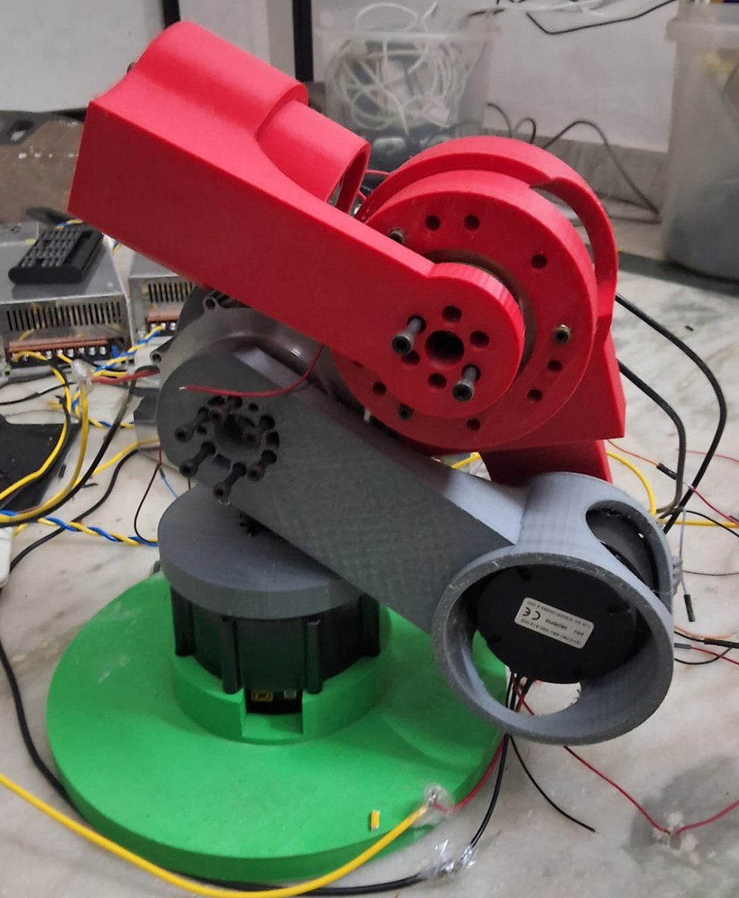
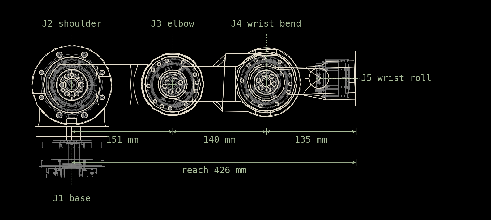
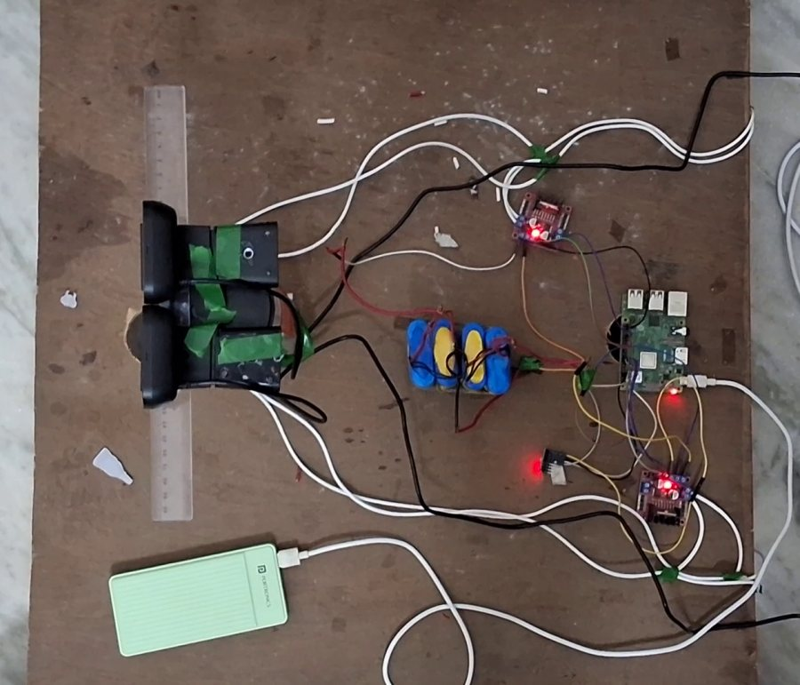

For investors
We are raising our first round.
Our software is released. The round will pay for the first robot that runs it: four wheels and two arms, to pick up litter from the streets of India.
Behind this text A park path in India, recorded with our own OAK-D-Lite camera. It is a 3-D place that we built, not a photo.
The ask
We ask for funding to build our first robot: four wheels and two arms, for one job: to pick up litter from the streets of India. It will run the software that we have already released. This round will build the robot and take it through three steps to milestone 1: the robot will pick up litter on a street in India. We raise one small round, paid in full at the start.
That software is built to tell a robot where it is, and how far away things are. It is open source. xclean is tested on 72 recorded routes. Our depth models are tested on public sets of real photos that they never saw.
We have not built a working robot yet. Our hardware so far is one early arm prototype, and one four-wheel test platform from 2025 that drives but does no task.
necessityrobotics@gmail.com Walk into a 3-D place we built
What we have built
A live SLAM system, two depth models and a map builder, in four open-source packages: xclean, nrs-large, nrs-edge and xclean-maps. All four were released in November 2026. All are free under Apache-2.0, also for commercial use. We developed and trained them on one desktop PC with one graphics card.
- xclean: live SLAM. It is built to tell a robot where it is, from a stereo camera. It uses no satellite signal (GPS). 20.4 ms from the arrival of an image to its position (median, on one desktop PC with an NVIDIA RTX 5090). Tested on 216 real-time replays of 72 recorded routes: an indoor drone, cars, a rover, a farm robot and our own camera.
How it worksEvery result
pip install "xstereo-slam[gpu]" - nrs-large: stereo depth. How far away each point is, from two camera photos. We trained it from scratch, in 92 hours on one graphics card, on computer-made images only. It passed 4 of 4 pass marks that we set before training, on real photos it never saw. The network design (DLNR) and the training recipe are from other teams. The trained weights are ours. See the depth
- nrs-edge: a small depth model, designed for the small computer inside a robot. It has 6 million parameters; nrs-large has 57 million. The network design (Lite Any Stereo V2) is from another team. The trained weights are ours.
Its results
pip install nrs-edge - xclean-maps: the map builder. It turns a recording into a 3-D place. The 3-D places on this site use a newer version with our depth model; that version is not released yet. The eight 3-D places
- Two papers and one technical note. We publish them on this site as PDF; they are not peer-reviewed. They give the test protocols, every result and the limits. xclean (PDF)nrs-large (PDF)nrs-edge (PDF)
Hardware so far
One arm prototype, and one four-wheel test platform from 2025. Both are early steps, not a working robot.
The arm prototype


The 3-D model of the arm loads here.
- The design: five joints (base, shoulder, elbow, wrist bend, wrist roll) and four printed links. Reach: 426 mm from the shoulder axis to the end of the arm.
- Done: designed in CAD, 3-D printed and assembled. It has five RobStride actuators: model 03 at the base and the shoulder, model 02 at the next two joints, and model 00 at the last joint. Each actuator holds its motor, a planetary gearbox, two encoders and its drive electronics. One joint turns under power.
- Not done: it cannot do a task. It has no gripper.
2025: our first four-wheel test platform
Our work started with this platform: a plywood base with four wheels, a Raspberry Pi and two webcams as a stereo pair. We built it for our first tests of stereo depth and SLAM. It is not the robot of our first round.

What the round builds
One robot, built and tested in three steps. The robot will work outdoors, in the real world, from its first step. Each step has its own pass mark. We will write it down before the step starts. We will publish the result of each step, the failures too.
- The robotFour wheels and two arms. It will run the software that we have released: xclean will tell the robot where it is, and nrs-edge, our small depth model, will tell its arms how far away things are. We will train the ML models that find litter and guide the arms to pick it up.
- Step 1Our software will run on the moving robot. xclean and nrs-edge will run on the robot's own computer while it drives outdoors. This will be their first run on any robot. We will publish the route, the delay from an image to its position, and the speed of nrs-edge on that computer.
- Step 2One arm will pick up one kind of litter outdoors. The place: a path that we choose, with no traffic. We will publish the success rate over all trials.
- Step 3Both arms will pick up litter on a street in India. The robot will drive along the street, find litter on the ground and pick it up. We will write the pass mark down before the first trial. We will publish the success rate over all trials.
- Milestone 1The robot will pick up litter on a street in India. This is our goal for the first robot. It is reached when step 3 passes its pass mark.
- Milestone 2The same work in the mountains of north India. Himachal Pradesh, Uttarakhand, Ladakh, and Jammu and Kashmir. The ground is rougher there, and the light is harder. This was our first idea for the robot, and it is our mission. It comes after milestone 1.
Why litter. The work is outdoors, in the real world. Every run will give us real data: what the robot saw, what it did, and if the pick passed or failed. A failed pick costs little: no customer's product breaks. Litter has no fixed shape, so the robot must learn to handle many kinds of things. We need no customer's building to start. A table in a laboratory cannot give us outdoor data.
One small round from investors, paid in full at the start. Then the work does not stop between the steps. You can follow the work in public: each step has its pass mark first, and we publish each result.
After the first robot: robot hands, more robot bodies and our own hardware, in time. Our plan and the reason for each step are on About.
Who we are
- Sumedh Bouddh, founder. Author of our two papers and our technical note. He builds the software: xclean, the depth models and their tests. He is self-taught: his formal education ended with high school.
- Karan Davande, co-founder. He does all our hardware and mechatronics work, including the arm prototype. He holds a B.Tech in computer science.
Necessity Robotics is a private limited company, registered in India. Both founders work on it full-time.
The company number (CIN), and the email and phone number of each founder, are on our About page.
For grant programmes and hubs
- Who applies: Necessity Robotics, a private limited company registered in India, with two founders. Both founders work on it full-time.
- What exists: released and tested software (above), one arm prototype and one four-wheel test platform.
- What a grant builds: one or more of the three steps to milestone 1. Step 1: our software will run on our first robot while it drives outdoors. Step 2: one arm will pick up one kind of litter outdoors, on a path with no traffic. We will publish the success rate.
- How we report: each step has its own pass mark. We write it down before the step starts. We will publish the result of each step, the failures too.
- Documents: the company number (CIN) is on our About page. We send the budget, the schedule and the company papers with an application.
Not done yet
We state our limits ourselves. The full record is on the Results page, the nrs-large page and the nrs-edge page.
- No working robot is built yet, and we have no customer yet. Our arm prototype turns one joint under power. It has no gripper and cannot do a task. No clip shows a joint that moves to a commanded position. Our test platform from 2025 drives, but it has no arm and does no task. Our first round will pay for the first robot and its steps to milestone 1.
- The models that find litter and guide the arms do not exist yet. We will train them for the first robot.
- xclean has run live only on a camera that stands still. Our tests on moving routes are real-time replays of recordings. Step 1 will be its first run on a robot.
- xclean is not more accurate than the two published systems we compared it with, ORB-SLAM3 and OKVIS2-X. On the routes that we kept out of development, it was worse more often than better. Every route and every loss is on the Results page.
- nrs-large is slow: 0.28 s per photo pair on one RTX 5090. We use it after a recording, not live. On one other public set it scored worse than the published result for the same design.
- nrs-edge is less exact than nrs-large. We set three pass marks before the test: it passed one and failed two. Its speed on a robot's computer is not measured yet. The live depth of the robot will depend on it.
Contact
Write to us. We read every message, and we answer with the amount and our plan for milestone 1. Grant programmes and innovation hubs: write to us too.